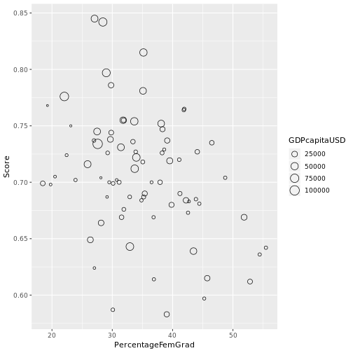
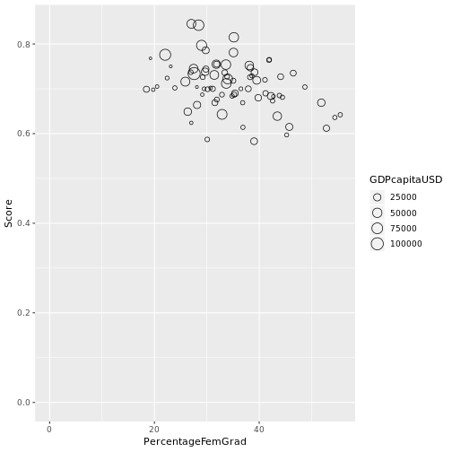
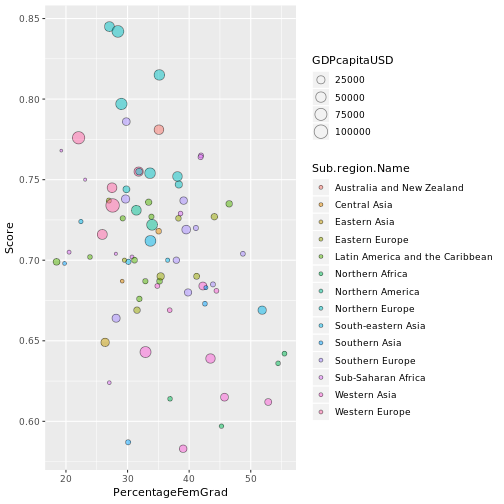
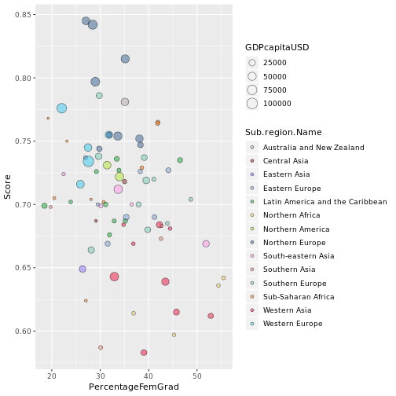
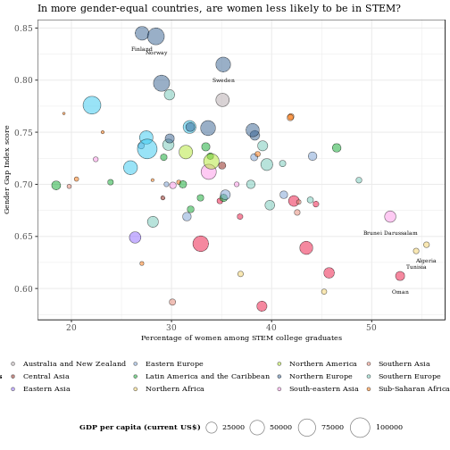

A gender-equality paradox in STEM?
Date: 2018-10-07
In countries that are more gender-equal, are women less likely to be in STEM? That's what psychologists Gijsbert Stoet, at Leeds Beckett University, and David Geary, at the University of Missouri, found in their 2018 study. They also found that girls performed similarly to or better than boys in science in two of every three countries.
I will recreate their scatterplot of countries based on 1) the number of female STEM graduates and 2) the Gender Gap Index score, a measure of gender equality by the World Economic Forum. Let's also design the chart to show the countries' GDP per capita and geographical groups to see if any patterns emerge.

Gather the data
In summary, the Gender Gap Index measures the level of gender equality across four dimensions: Economic Participation and Opportunity, Educational Attainment, Health and Survival, and Political Empowerment. The higher the score, the better a country is performing on that index.
Get the Index data. It's from a World Economic Forum report (in pdf!) but fortunately, it's also available in csv format, courtesy of the World Bank. The csv data was only up to 2016 when accessed but it'll do. Go to the World Bank webpage to download the data.
# install.packages("dplyr") if not yet installed
library(dplyr)
library(tidyr)
# Read in Gender Gap Index data
genderindex <- read.csv("data.csv")
Data on percentage of female STEM graduates can be found at UNESCO's data portal on education. In the left tab, select Completion > Percentage of tertiary graduates > Percentage of female graduates by field of study.
Customise selection to Percentage of graduates from Science, Technology , Engineering and Mathematics programmes in tertiary education who are female (%) and load the data.
femSTEM <- read.csv("EDULIT_DS_06102018112127863.csv") # Read in STEM percentage data. The file name will differ based on the date/time of loading.
Data on countries' GDP per capita (current US dollars) can be found at another World Bank webpage
The link loads a zipped folder but we can use the unzip function.
The unzipped content includes some metadata files but only the main file is of interest.
# Read in countries' GDP per capita data
GDPcapita <- read.csv("API_NY.GDP.PCAP.CD_DS2_en_csv_v2_10134337.csv", skip = 4)
For regional groupings, we will refer to the UN Statistics Division's methodology. Click on the language tab of choice for options to load the data.
# Read in regional groupings data
geogrp <- read.csv("UNSD — Methodology.csv")
Preview and clean the data
A quick look at genderindex shows that besides the Gender Gap Index, subindices that compose this overall index are also included in the dataset. We're only interested in countries' overall index scores so we'll create a new dataframe with the relevant subset in a series of steps.
str(genderindex)
## 'data.frame': 1885 obs. of 15 variables:
## $ Country.ISO3 : Factor w/ 148 levels "AGO","ALB","ARE",..: 1 1 1 1 1 1 1 1 1 1 ...
## $ Country.Name : Factor w/ 148 levels "Albania","Algeria",..: 3 3 3 3 3 3 3 3 3 3 ...
## $ Indicator : Factor w/ 6 levels "Global Gender Gap Economic Participation and Opportunity Subindex",..: 1 1 2 2 3 3 4 4 5 5 ...
## $ Subindicator.Type: Factor w/ 4 levels "Index","Normalized Score",..: 1 3 1 3 1 3 1 3 1 3 ...
## $ X2006 : num 0.587 69 0.779 107 0.98 ...
## $ X2007 : num 0.585 87 0.779 119 0.98 ...
## $ X2008 : num 0.584 87 0.778 122 0.98 ...
## $ X2009 : num 0.583 96 0.778 127 0.98 ...
## $ X2010 : num 0.63 76 0.785 125 0.98 ...
## $ X2011 : num 0.594 96 0.786 126 0.98 ...
## $ X2012 : num NA NA NA NA NA NA NA NA NA NA ...
## $ X2013 : num 0.616 92 0.806 127 0.98 ...
## $ X2014 : num 0.588 111 0.721 138 0.975 ...
## $ X2015 : num 0.59 116 0.726 141 0.98 1 0.251 38 0.637 126 ...
## $ X2016 : num 0.565 120 0.778 138 0.98 1 0.251 40 0.643 117 ...
#Reshape the data from 'wide' to 'long' form
#Select rows that meet conditions
genderindex2 <- genderindex %>% gather(Year, Score, X2006:X2016) %>% subset(Indicator == "Overall Global Gender Gap Index" & Subindicator.Type == "Index")
#Keep only columns of interest
genderindex2 <- genderindex2[, c("Country.Name", "Country.ISO3","Year","Score")]
# Rename variables to keep things tidier
genderindex2 <- rename(genderindex2, Country = Country.Name, Code = Country.ISO3)
# Use regrex to remove the 'x' in front of the year
genderindex2$Year <- sub("^.","",genderindex2$Year)
Now let's do the same for femSTEM.
str(femSTEM)
## 'data.frame': 369 obs. of 9 variables:
## $ EDULIT_IND: Factor w/ 1 level "FGP_5T8_F500600700": 1 1 1 1 1 1 1 1 1 1 ...
## $ Indicator : Factor w/ 1 level "Percentage of graduates from Science, Technology , Engineering and Mathematics programmes in tertiary education"| __truncated__: 1 1 1 1 1 1 1 1 1 1 ...
## $ LOCATION : Factor w/ 126 levels "ABW","AGO","ALB",..: 9 9 9 10 10 10 13 13 13 13 ...
## $ Country : Factor w/ 126 levels "Albania","Algeria",..: 9 9 9 10 10 10 15 15 15 15 ...
## $ TIME : int 2013 2014 2015 2014 2015 2016 2012 2013 2014 2015 ...
## $ Time : int 2013 2014 2015 2014 2015 2016 2012 2013 2014 2015 ...
## $ Value : num 30.7 31 31.7 26.1 25.3 ...
## $ Flag.Codes: Factor w/ 4 levels "","+","a","n": 1 1 1 1 1 1 1 1 1 1 ...
## $ Flags : Factor w/ 4 levels "","Category not applicable",..: 1 1 1 1 1 1 1 1 1 1 ...
femSTEM2 <- femSTEM[, c("LOCATION", "Country",
"Time", "Value")]
femSTEM2 <- rename(femSTEM2, Code = LOCATION,
Year = Time, PercentageFemGrad = Value)
femSTEM2$Year <- as.character.Date(femSTEM2$Year)
Likewise for GDPcapita...
str(GDPcapita)
## 'data.frame': 264 obs. of 63 variables:
## $ Country.Name : Factor w/ 264 levels "Afghanistan",..: 11 1 6 2 5 8 250 9 10 4 ...
## $ Country.Code : Factor w/ 264 levels "ABW","AFG","AGO",..: 1 2 3 4 5 6 7 8 9 10 ...
## $ Indicator.Name: Factor w/ 1 level "GDP per capita (current US$)": 1 1 1 1 1 1 1 1 1 1 ...
## $ Indicator.Code: Factor w/ 1 level "NY.GDP.PCAP.CD": 1 1 1 1 1 1 1 1 1 1 ...
## $ X1960 : num NA 59.8 NA NA NA ...
## $ X1961 : num NA 59.9 NA NA NA ...
## $ X1962 : num NA 58.5 NA NA NA ...
## $ X1963 : num NA 78.8 NA NA NA ...
## $ X1964 : num NA 82.2 NA NA NA ...
## $ X1965 : num NA 101 NA NA NA ...
## $ X1966 : num NA 138 NA NA NA ...
## $ X1967 : num NA 161 NA NA NA ...
## $ X1968 : num NA 130 NA NA NA ...
## $ X1969 : num NA 130 NA NA NA ...
## $ X1970 : num NA 157 NA NA 3239 ...
## $ X1971 : num NA 160 NA NA 3498 ...
## $ X1972 : num NA 136 NA NA 4217 ...
## $ X1973 : num NA 144 NA NA 5342 ...
## $ X1974 : num NA 175 NA NA 6320 ...
## $ X1975 : num NA 188 NA NA 7169 ...
## $ X1976 : num NA 199 NA NA 7152 ...
## $ X1977 : num NA 226 NA NA 7751 ...
## $ X1978 : num NA 249 NA NA 9130 ...
## $ X1979 : num NA 278 NA NA 11821 ...
## $ X1980 : num NA 275 664 NA 12377 ...
## $ X1981 : num NA 266 600 NA 10372 ...
## $ X1982 : num NA NA 579 NA 9610 ...
## $ X1983 : num NA NA 582 NA 8023 ...
## $ X1984 : num NA NA 597 663 7729 ...
## $ X1985 : num NA NA 712 663 7774 ...
## $ X1986 : num NA NA 648 719 10362 ...
## $ X1987 : num NA NA 721 699 12616 ...
## $ X1988 : num NA NA 762 677 14304 ...
## $ X1989 : num NA NA 863 723 15166 ...
## $ X1990 : num NA NA 923 639 18879 ...
## $ X1991 : num NA NA 845 349 19533 ...
## $ X1992 : num NA NA 641 218 20548 ...
## $ X1993 : num NA NA 430 381 16516 ...
## $ X1994 : num 17342 NA 321 619 16235 ...
## $ X1995 : num 16442 NA 388 761 18461 ...
## $ X1996 : num 16585 NA 513 1046 19017 ...
## $ X1997 : num 17927 NA 507 750 18353 ...
## $ X1998 : num 19081 NA 420 865 18895 ...
## $ X1999 : num 19356 NA 386 1098 19262 ...
## $ X2000 : num 20621 NA 555 1176 21937 ...
## $ X2001 : num 20671 117 526 1327 22229 ...
## $ X2002 : num 20434 188 711 1454 24741 ...
## $ X2003 : num 20835 199 779 1891 32776 ...
## $ X2004 : num 22568 219 1041 2417 38503 ...
## $ X2005 : num 23303 250 1444 2709 41282 ...
## $ X2006 : num 24015 273 2062 3005 43749 ...
## $ X2007 : num 25921 370 2879 3603 48583 ...
## $ X2008 : num 27547 373 3869 4371 47786 ...
## $ X2009 : num 24631 446 3348 4114 43339 ...
## $ X2010 : num 24272 553 3531 4094 39736 ...
## $ X2011 : num 25325 604 4299 4437 41099 ...
## $ X2012 : num NA 669 4539 4248 38391 ...
## $ X2013 : num NA 639 4805 4413 40620 ...
## $ X2014 : num NA 629 4708 4579 42295 ...
## $ X2015 : num NA 570 3684 3953 36038 ...
## $ X2016 : num NA 562 3309 4132 37232 ...
## $ X2017 : num NA 586 4170 4538 39147 ...
## $ X : logi NA NA NA NA NA NA ...
GDPcapita2 <- GDPcapita %>%
gather(Year, GDPcapitaUSD, X1960:X2017) %>%
rename(Country = Country.Name, Code = Country.Code)
GDPcapita2 <- GDPcapita2[, c("Country", "Code", "GDPcapitaUSD","Year")]
# Use regrex to remove the 'x' in front of the year
GDPcapita2$Year <- sub("^.","",GDPcapita2$Year)
...as well as for geogrp. It looks like no change is required except a little renaming for consistency.
str(geogrp)
## 'data.frame': 252 obs. of 15 variables:
## $ Global.Code : Factor w/ 2 levels "001","Developing": 1 1 1 1 1 1 1 1 1 1 ...
## $ Global.Name : Factor w/ 2 levels "","World": 2 2 2 2 2 2 2 2 2 2 ...
## $ Region.Code : int 2 2 2 2 2 2 2 2 2 2 ...
## $ Region.Name : Factor w/ 6 levels "","Africa","Americas",..: 2 2 2 2 2 2 2 2 2 2 ...
## $ Sub.region.Code : int 15 15 15 15 15 15 15 202 202 202 ...
## $ Sub.region.Name : Factor w/ 18 levels "","Australia and New Zealand",..: 9 9 9 9 9 9 9 16 16 16 ...
## $ Intermediate.Region.Code : int NA NA NA NA NA NA NA 14 14 14 ...
## $ Intermediate.Region.Name : Factor w/ 9 levels "","Caribbean",..: 1 1 1 1 1 1 1 5 5 5 ...
## $ Country.or.Area : Factor w/ 248 levels "","Afghanistan",..: 5 69 128 149 212 226 245 34 39 52 ...
## $ M49.Code : Factor w/ 250 levels "","004","008",..: 5 232 124 143 209 224 210 28 34 49 ...
## $ ISO.alpha3.Code : Factor w/ 249 levels "","344","446",..: 68 70 130 139 194 227 72 108 22 54 ...
## $ Least.Developed.Countries..LDC. : Factor w/ 5 levels "","BES","HKG",..: 1 1 1 1 5 1 1 1 5 5 ...
## $ Land.Locked.Developing.Countries..LLDC.: Factor w/ 2 levels "","x": 1 1 1 1 1 1 1 1 2 1 ...
## $ Small.Island.Developing.States..SIDS. : Factor w/ 2 levels "","x": 1 1 1 1 1 1 1 1 1 2 ...
## $ Developed...Developing.Countries : Factor w/ 4 levels "","Developed",..: 3 3 3 3 3 3 3 3 3 3 ...
geogrp <- rename(geogrp, Code = ISO.alpha3.Code)
The latest data we downloaded on the Gender Gap Index was for 2016 so let's try to merge the datasets for that year. A check on the available data for 2016 indicate we should ideally have 85 matches. However, we only got 80 matches.
femSTEM3 <- femSTEM2 %>% subset(Year == "2016") %>% na.omit(femSTEM2)
genderindex3 <- genderindex2 %>% subset(Year == "2016") %>% na.omit(genderindex2)
nrow(femSTEM3)
## [1] 85
nrow(genderindex3)
## [1] 144
combined <- merge(femSTEM3, genderindex3, by = "Code")
nrow(combined)
## [1] 80
Use the merge function again to identify the countries that got dropped (i.e. Gender Gap Index did not have data on these countries, at least for the year 2016).
test <- merge(femSTEM3, combined, by = "Code", all.x = TRUE)
test <- subset(test, is.na(Score))
test$Country
## [1] Democratic Republic of the Congo
## [2] Eritrea
## [3] China, Macao Special Administrative Region
## [4] Palestine
## [5] Seychelles
## 126 Levels: Albania Algeria Andorra Angola ... Zimbabwe
GDPcapita3 <- subset(GDPcapita2, Year == "2016" & !is.na(GDPcapitaUSD))
combined2 <- Reduce(function(...) merge(..., by= c("Code")), list(femSTEM3, genderindex3,GDPcapita3,geogrp))
#Use Reduce function to merge more than 2 dataframes simultaneously
Visualize the data
Let's start with a basic scatterplot. This ggplot tutorial by Jodie Burchell and Mauricio Vargas Sepúlveda is a major help.
library(ggplot2)
p <- ggplot(combined2, aes(x= PercentageFemGrad, y =Score))
+ geom_point()
p
Let's weigh the points with the GDPcapitaUSD variable and change their shape to circles.
p <- ggplot(combined2, aes(x= PercentageFemGrad,
y = Score, size = GDPcapitaUSD))
+ geom_point(shape = 21)
p

Usually it's a good idea to have both axes begin at 0. Let's see what happens if we force the origin to start at 0.
test_p <- p + expand_limits(x = 0, y = 0)
test_p

It's harder to see what's going on so we'll retain the earlier 'zoomed in' version of the plot. Let's see if there's any regional trend by basing the colour fill of the circles on the Sub.region.Name variable.
p <- ggplot(combined2, aes(x= PercentageFemGrad, y =Score, size = GDPcapitaUSD, fill = Sub.region.Name)) + geom_point(shape = 21, alpha = 0.5)
#Add fill according to Sub.region.Name variable
#Adjust transparency of circles' fill
p

It's not so easy to tell the regions apart so let's adjust the colours manually.
fill = c("Australia and New Zealand" = "#b4a8ab","Northern Africa" ="#f4d16a","Sub-Saharan Africa" = "#fb7810", "Latin America and the Caribbean" = "#0ca82e","Northern America" = "#b1e632" ,"Eastern Europe" = "#7aa0d3","Southern Europe" ="#72c8b8","Northern Europe" = "#35618f", "Western Europe" ="#35c8ef", "Central Asia" = "#8a1c12", "Eastern Asia" ="#8f68ff", "South-eastern Asia" = "#fd95e8", "Southern Asia" = "#e38473", "Western Asia" ="#eb1241")
p <- p + scale_fill_manual(values = fill)
p

For the finishing touches, we will edit the sizes, labels, and background themes.
p <- ggplot(combined2, aes(x= PercentageFemGrad, y =Score, size = GDPcapitaUSD, fill = Sub.region.Name)) + geom_point(shape = 21, alpha = 0.5) + scale_size_continuous(range = c(1, 10)) +
#Adjusts the range of the minimum and maximum point size
geom_text(data = subset(combined2, PercentageFemGrad > 50 | Score > 0.8 ), aes(label = Country.x), family = "Georgia", size = 2 , nudge_x = 0.01, nudge_y = -0.015) +
#Labels data points for countries where
#percentage of female graduates
#in STEM is more than 50% or score in Gender Gap index
#is greater than 0.8.
#Adjusts positions of labels.
theme_bw() +
theme() +
ggtitle("In more gender-equal countries, are women less likely to be in STEM?")+
labs(x = "Percentage of women among STEM college graduates", y ="Gender Gap Index score", size = "GDP per capita (current US$)", fill = "Sub-regions")+
scale_fill_manual(values = fill)+
theme(legend.position = "bottom", legend.direction = "horizontal",
legend.box = "vertical",
legend.key.size = unit(0.5, "cm"),
plot.title = element_text(family="Georgia", size =11),
text = element_text(family = "Georgia"),
axis.title = element_text(size = 8),
legend.text = element_text(size = 8),
legend.title=element_text(face = "bold", size = 8))
p

Some observations and thoughts
From the scatterplot, it's clear that Northern European countries, particularly, those in Scandinavia, gravitate towards a higher Gender Gap Index score and lower percentage of female STEM graduates while the inverse is true for West Asian countries (which include the Middle East).
In the study, Stoet and Geary (the authors ) state that "life-quality pressures" in less gender-equal countries may be at play for a higher proportion of female engagement with STEM, suggesting that women may simply be less interested in STEM if they have a choice. Adam Mastroianni and Dakota McCoy posted on the Scientific American blog that they disagree. For them, the answer had to do with (discriminatory) cultural attitudes toward women in STEM.
I'm more inclined towards the latter view, and I think that in countries with greater gender inequality, there is less difference in the extent of cultural biases that women face being in STEM versus non-STEM. This, in turn, results in less of a barrier for women entering STEM.
Back to the scatterplot, here's another interesting point: While a good number of countries that perform better on the Gender Gap Index tend to be wealthier as denoted by larger bubble sizes, there are much poorer countries performing just as well. These countries are from Sub-Saharan Africa.